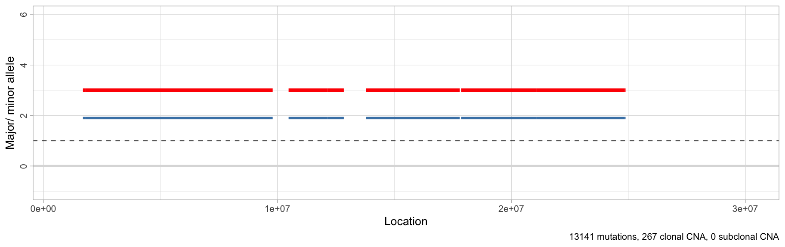
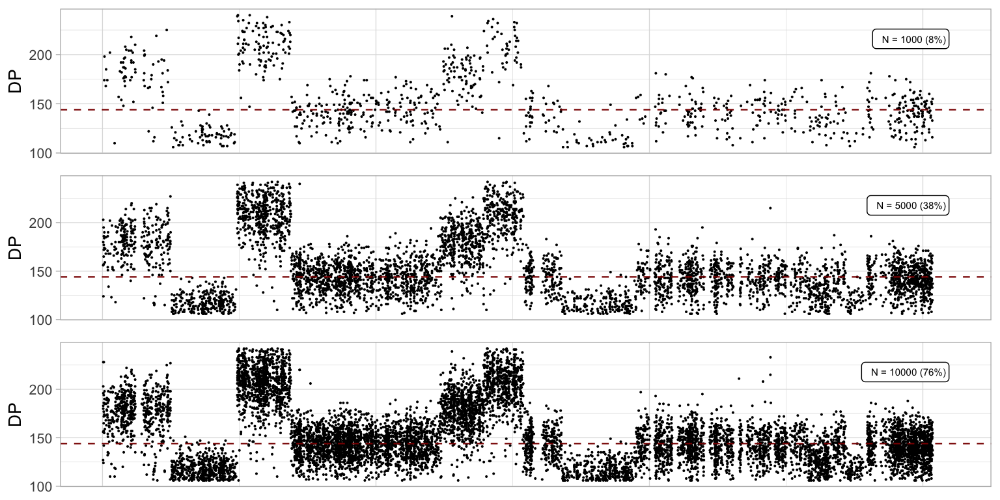

library(CNAqc)
#> [32m✓[39m Loading [32m[32mCNAqc[32m[39m, [3m[3m'Copy Number Alteration quality check'[3m[23m. Support : [3m[34m[3m[34m<https://caravagn.github.io/CNAqc/>[34m[3m[39m[23mTo set-up your data and work with the CNAqc package, you need to have:
- mutation calls;
- CNA segments;
- tumor purity estimates;
The workflow of the package is simple:
- load input data into the package;
- use package functions to inspiect the data, and run QC analyses;
- visualize and export QC results.
QC results can be used to determine if the estimated purity and CNA fits to the observed mutation data are good. If they are off, QC results can be used to adjust the actual set of calls (e.g., adjusting the purity by a certain factor).
Input format
CNAqc uses hg19 chromosome coordinates to map mutations and CNAs. The package comes with a template dataset available.
Input mutations and CNA must be a data.frame (or a tibble). Both of them are required to have certain set of pretty standard columns; any extra column will be retained with the data.
# Example input SNVs
print(
example_dataset_CNAqc$snvs %>%
select(
chr, from, to, # Genomic coordinates
ref, alt, # Alleles (reference and alternative)
DP, NV, VAF # Read counts (depth, number of variant reads, tumour VAF)
)
)#> # A tibble: 13,141 x 8
#> chr from to ref alt DP NV VAF
#> <chr> <dbl> <dbl> <chr> <chr> <dbl> <dbl> <dbl>
#> 1 chr1 1027104 1027105 T G 60 6 0.1
#> 2 chr1 2248588 2248589 A C 127 9 0.0709
#> 3 chr1 2461999 2462000 G A 156 65 0.417
#> 4 chr1 2727935 2727936 T C 180 90 0.5
#> 5 chr1 2763397 2763398 C T 183 61 0.333
#> 6 chr1 2768208 2768209 C T 203 130 0.640
#> 7 chr1 2935590 2935591 C T 228 132 0.579
#> 8 chr1 2980032 2980033 C T 196 85 0.434
#> 9 chr1 3387161 3387162 T G 124 6 0.0484
#> 10 chr1 3502517 3502518 G A 88 10 0.114
#> # … with 13,131 more rows
Chromosome names and alleles should be in character format; chromosomes must be in the format chr1, chr2, etc.. CNAqc will use all available mutation types but we suggest to carry out QC with high-quality SNV data.
CNA calls must be in absolute format, reporting the allelic imbalance of each segment.
# Example input CNA
print(
example_dataset_CNAqc$cna %>%
select(
chr, from, to, # Genomic coordinates
Major, minor # Number of copies of major/ and minor allele (B-allele)
)
)#> # A tibble: 267 x 5
#> chr from to Major minor
#> <chr> <int> <int> <dbl> <dbl>
#> 1 chr1 840009 1689987 3 2
#> 2 chr1 1689988 1815015 3 2
#> 3 chr1 1815016 9799969 3 2
#> 4 chr1 10479910 12079917 3 2
#> 5 chr1 12079917 12154980 3 2
#> 6 chr1 12154981 12839977 3 2
#> 7 chr1 13780016 17790026 3 2
#> 8 chr1 17849962 21080067 3 2
#> 9 chr1 21080068 21559998 3 2
#> 10 chr1 21559998 24830001 3 2
#> # … with 257 more rows
In this format, a diploid segment will have Major = minor = 1 and will be denoted as 1:1. CNAqc distinguishes between clonal and subclonal CNA calls, if the Cancer Cell Fraction of a segment (i.e., its clonality) is reported.
A CCF column can represent the segment CCF as [0,1] real-value. If missing, CCF = 1 is set assuming clonal segments; otherwise, segments with CCF<1 are considered subclonal CNAs.
To analyze the data, a purity value in between 0 and 1 is required to represent the proportion of actual tumour content, sometimes called “cellularity”.
Initialisation
To use the package, you need to initialize a cnaqc object.
This can be achieved running the initialisation function init, and passing mutation, CNA and purity data. This function will perform basic checks on the input format, and will map mutations to CNA segments. This operation can take some time, as it depends on the number of segments in the CNA calls, and the number of mutations in the data. This call does not subset the data, unless there are errors with respect to its expected format.
# Use SNVs, CNAs and tumour purity
x = init(
example_dataset_CNAqc$snvs,
example_dataset_CNAqc$cna,
example_dataset_CNAqc$purity
)#> [ CNAqc - CNA Quality Check ]
#>
#> [33m![39m Missing CCF column from CNA calls, adding CCF = 1 assuming clonal CNA calls.
#> [36mℹ[39m Input n = 13141 mutations for267 CNA segments (267 clonal, 0 subclonal)
#> [32m✓[39m Mapped n =12963 mutations to clonal segments (~99% of input)The summary of the object is available via the S3 print function, reporting some basic statistics of the data. In particular, this reports the number of mutations per karyotype sorted by size, and annotates by default is any analysis has been computed on these calls (default: no).
print(x)
#> ── [43m[30m[ CNAqc ] [39m[49m n = 13141 mutations in [32m[32m267[32m[39m segments (267 clonal + 0 subclonal) ───────────────────────────────────────────
#> [36mℹ[39m Purity: 89% ~ Ploidy: 4.
#> [36mℹ[39m Mutation mapping (head): 7478 (2:2); 1893 (4:2); 1625 (3:2); 1563 (2:1); 312 (3:0); 81 (2:0)Plotting segments, genome-wide mutations and CNA calls
CNAqc maps CNA calls to the hg19 human genome coordinates; the references used are avaible attached to the package
#> # A tibble: 24 x 6
#> chr length from to centromerStart centromerEnd
#> <chr> <int> <dbl> <dbl> <dbl> <dbl>
#> 1 chr1 249250621 0 249250621 121535434 124535434
#> 2 chr2 243199373 249250621 492449994 341576792 344576792
#> 3 chr3 198022430 492449994 690472424 582954848 585954848
#> 4 chr4 191154276 690472424 881626700 740132541 743132541
#> 5 chr5 180915260 881626700 1062541960 928032341 931032341
#> 6 chr6 171115067 1062541960 1233657027 1121372126 1124372126
#> 7 chr7 159138663 1233657027 1392795690 1291711358 1294711358
#> 8 chr8 146364022 1392795690 1539159712 1436634577 1439634577
#> 9 chr9 141213431 1539159712 1680373143 1586527391 1589527391
#> 10 chr10 135534747 1680373143 1815907890 1719628078 1722628078
#> # … with 14 more rows
Segments can be visualized via function plot_segments. By default, this function plots all the genome, annotating in the figure caption some summmary statistics about the data, and plots the major and minor alleles for each segment.
# Default plot
plot_segments(x)
#> Warning in plot_segments(x): Segments with CN above 8 will not be plot; this is
#> annotated in the figure.
#> Warning: Removed 10 rows containing missing values (geom_segment).
This function, as most of the package plotting functions, returns a ggplot object, which makes it very easy to perform further manipulations.
# Reduce y-axis
plot_segments(x) + ylim(-1, 6)
#> Warning in plot_segments(x): Segments with CN above 8 will not be plot; this is
#> annotated in the figure.
#> Scale for 'y' is already present. Adding another scale for 'y', which will
#> replace the existing scale.
#> Warning: Removed 10 rows containing missing values (geom_segment).
# Reduce x,y-axis
plot_segments(x) + xlim(1e6, 30e6) + ylim(-1, 6)
#> Warning in plot_segments(x): Segments with CN above 8 will not be plot; this is
#> annotated in the figure.
#> Scale for 'x' is already present. Adding another scale for 'x', which will
#> replace the existing scale.
#> Scale for 'y' is already present. Adding another scale for 'y', which will
#> replace the existing scale.
#> Warning: Removed 24 rows containing missing values (geom_rect).
#> Warning: Removed 24 rows containing missing values (geom_vline).
#> Warning: Removed 24 rows containing missing values (geom_label).
#> Warning: Removed 257 rows containing missing values (geom_segment).
#> Warning: Removed 257 rows containing missing values (geom_segment).
#> Warning: Removed 246 rows containing missing values (geom_point).
#> Warning: Removed 10 rows containing missing values (geom_point).
Genome-wide plots that follow the layout of plot_segments are avaiable to view the number of mutations, their VAF and depth. VAF and depth-plotting functions (scatterplots) can subset the input data to speed up rendering and reduce the size of output files - by default 5000 points are randomly sampled. Counts plot, instead, bin the genome locations by one megabase.
# All genome, all data - counts of mutations per megabase
plot_counts(x)
#> Warning: Removed 2 rows containing missing values (geom_bar).
An example effect of downsampling the data is the following
# Different subsamples
ggpubr::ggarrange(
plot_vaf(x, N = 1000),
plot_vaf(x),
plot_vaf(x, N = 10000),
ncol = 1
)
# Different subsamples
ggpubr::ggarrange(
plot_depth(x, N = 1000),
plot_depth(x),
plot_depth(x, N = 10000),
ncol = 1
)
A one-summary plot can be easily assembled combining the above functions and functions from cowplot or other ggplot-manipulation packages.
# Layout a panel with segments in bottom, and all other genome-wide plots on top.
# Via cowplot we can align plots on the vertical axis, and stretch their relative
# height to obtain a nicer layout.
cowplot::plot_grid(
plot_counts(x),
plot_vaf(x, N = 10000),
plot_depth(x, N = 10000),
plot_segments(x) + ylim(-1, 6),
align = 'v',
nrow = 4,
rel_heights = c(.15, .15, .15, .8))
#> Warning in plot_segments(x): Segments with CN above 8 will not be plot; this is
#> annotated in the figure.
#> Scale for 'y' is already present. Adding another scale for 'y', which will
#> replace the existing scale.
#> Warning: Removed 2 rows containing missing values (geom_bar).
#> Warning: Removed 10 rows containing missing values (geom_segment).
A summary plot of CNA calls is available via function plot_karyotypes. This function implements two visualizations:
-
type = 'percentage', reporting the proportion of genome covered by each karyotypes (default); -
type = 'number', reporting the counts of segments per karyotype.
The package uses a pre-set color schema to colour diploid segments in green, LOH segments in blue and amplifications in red.
ggpubr::ggarrange(
plot_karyotypes(x),
plot_karyotypes(x, type = 'number'),
common.legend = TRUE,
legend = 'bottom'
)